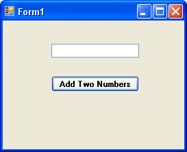
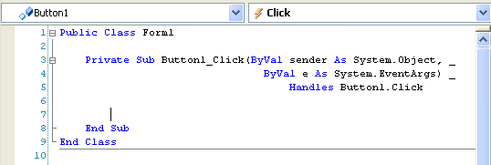
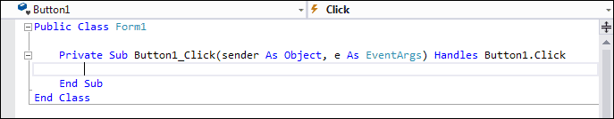

Adding a Button to a Form
Instead of double clicking the Button tool in the toolbox to add the control to the form, we'll explore another way to do it.
With your Form displayed in the Visual Basic Design environment, do the following:
- Click on the Button tool in the toolbox with the left hand mouse button, but click only once
- Move your mouse to a blank area of your form - the mouse pointer will turn into a cross
- Press and hold down the left mouse button
- Drag across the form with the button held down
- Let go of the mouse button when you're happy with the size
- A Button is drawn
You can use the above method to draw most of the controls onto the form - labels, Buttons, textboxes, etc.
The Button control, just like all the other controls we've seen so far, has a list of properties. One of these properties is the Text property. At the moment, your button will say "Button 1". You can change that to anything you like.
- Click on the Button to highlight it
- Click on Text in the Property Box
- Click in the box next to the word "Text"
- Delete the word "Button 1"
- Type "Add two numbers"
- Click back on the Form
Now add a Textbox to your form using one of the methods outlined (either double-click, or draw).
Your Form should now look something like this:

The Font property of the Button has also been changed, here, in exactly the same way as we changed the Font property of the Label and Textbox previously. The Text for the Textbox control has had its default Text (Textbox 1) deleted.
To get our first look at the code window, double click your Button control. The code window will appear, and will look like this in version 2010:

And this in version 2012:

In the 2010 version, notice that we've used the underscore character ( _ ) to spread the code over more than one line. You can do this in your own code, if it becomes too long. But you don't have to.
In the 2012 version, notice that the word ByVal is missing between the round brackets. Don't worry about what this means, but we'll cover it much later. (It's still ByVal, in case you're curious, but it's missing because ByVal the default type.)
No more reading these lessons online - get the eBook here!
The part to concentrate on for the moment is where your cursor is flashing on and off. Because you double-clicked the Button control, the cursor will be flashing between the lines Private Sub … and End Sub.
Here's the part we're concentrating on:
Private Sub Button1_Click(ByVal
sender As System.Object, _
ByVal e As System.EventArgs) _
Handles Button1.Click
End Sub
The part of the code we're interested in is highlighted in red in the code above. Notice, too, that the underscore character ( _ ) has been used to spread the code over more than one line. You can do this in your own code, too, if it becomes to long:
- Private
- Private means that no other part of the programme can see this code except for our button
- Sub
- Short for Subroutine. The "Sub" word tells VB that some code follows, and that it needs to be executed
- Button1
- This is the name of our button. You might think that we've just erased the word "Button1" when we changed the Text property, so why does VB insist that it's still called Button1? We'll, the Name property of the control is the important one. If you change the Name property, VB will change this button name for you
- _Click ( )
- This is something called an Event. In other words, when the button is clicked, the Click Event will fire, and the code we're going to write will be executed
- End Sub
- The subroutine ends right here. This signifies the end of our code
Don't worry if you don't understand all of that. It will become clearer later. Let's add our code, which we'll do on the next page.